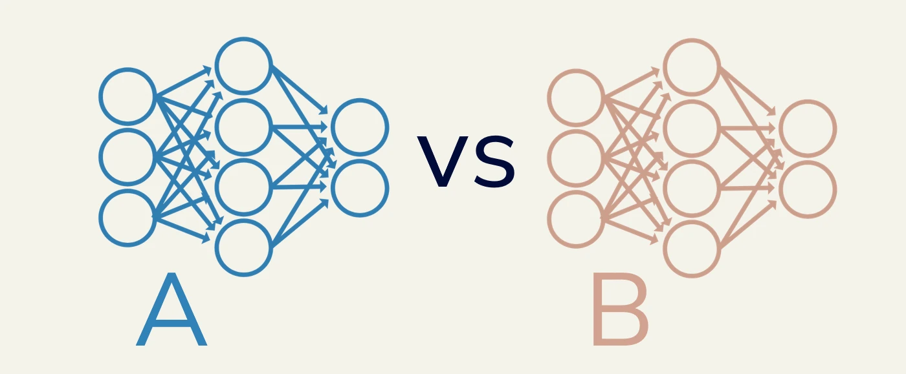
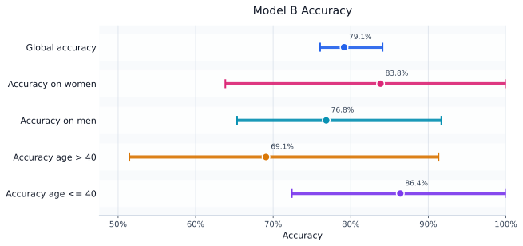
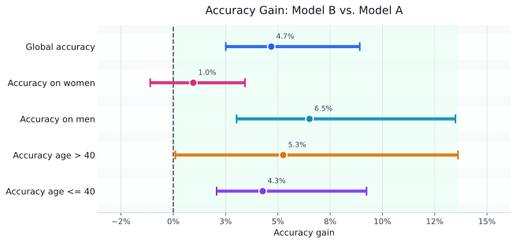

Monitoring ML Models with Confidence Sequences
Consider the following situation. You have an existing model, model \(A\), that is already deployed, and you have just trained a challenger model, model \(B\). On the test set, model \(B\) appears to perform better. But how sure can we be that this improvement is real? A test set is still only a finite sample: a small difference in accuracy could reflect a genuine improvement, but it could also be the result of a lucky or unlucky draw of test examples.

This tutorial shows how confidence sequences can be used to monitor a model’s performance with statistical guarantees. In particular, we will use them to assess improvements in overall accuracy while simultaneously monitoring subgroup performance.
Confidence Sequences
Confidence sequences are a sequential extension of the confidence intervals you may have seen in a statistics course. The key difference is that they are designed to remain valid when we repeatedly inspect the result as more data arrives. Nonetheless, many of the ideas discussed here also apply to fixed-time confidence intervals.
Definition: Confidence Sequence.
Assume that we observe vectors \(\mathbf{y}_1,\mathbf{y}_2,\dots \in [0,1]^D\) with \(\mathbb{E}[\mathbf{y}_t]=\mathbf{\mu}\) for all \(t\), where \(\mathbf{\mu}\in[0,1]^D\). A multivariate confidence sequence for \(\mathbf{\mu}\) is a sequence of sets \(\mathcal{C}_1,\mathcal{C}_2,\dots\) with \(\mathcal{C}_t\subseteq[0,1]^D\) satisfying
\[ \mathbb{P}\!\left( \forall t \ge 1:\ \mathbf{\mu} \in \mathcal{C}_t \right) \ge 1-\alpha, \]
for a prescribed error level \(\alpha\) (e.g., \(5\%\)).
The statement inside the probability is important. It does not say that \(\mathbf{\mu}\) is covered at one particular time \(t\). It says that, with probability at least \(1-\alpha\), the whole sequence covers \(\mathbf{\mu}\) simultaneously at all times. This is what makes confidence sequences safe to monitor repeatedly over an incoming stream of data.
Here, the observations are vectors, and the sets \(\mathcal{C}_t\) are \(D\)-dimensional shapes. This is especially relevant for machine learning evaluation, where we usually care about more than one metric. For example, we may want to track overall accuracy, accuracy on women, accuracy on men, accuracy for people below a certain age, and so on. Each coordinate of \(\mathbf{\mu}\) then corresponds to one quantity of interest.
A curious reader may wonder whether we could instead construct a separate confidence sequence for each metric. We can, but separate guarantees do not automatically give a joint guarantee over all metrics. If each metric is monitored separately, the chance that at least one confidence sequence makes an error increases as we monitor more metrics. A multivariate confidence sequence handles this directly: it gives a single confidence set for the full vector mean \(\mathbf{\mu}\).
A Bounding-Box Confidence Sequence
There are many ways to construct confidence sequences. In this tutorial, we use the bounding-box construction from our paper because it is easy to work with and performs well in practice. Understanding all the technical details is not needed here; what matters is that the resulting confidence set has a particularly simple form.
The bounding box is defined as:
\[ \begin{aligned} \mathcal{C}_t &= \left\{\mathbf{m}\in[0,1]^D \mid m_d\in[l_d,u_d], \ d=1,\dots,D\right\}, \\ [l_d,u_d] &= \left\{m_d\in[0,1]\mid w_d k^d(m_d) \le \frac{1}{\alpha}-\sum_{j\neq d} w_j k^j_\star \right\}. \end{aligned} \]
Here, \(k^d(m):[0,1]\rightarrow \mathbb{R}^+\) is a one-dimensional function for coordinate \(d\), computed from the observations seen so far, \(\mathbf{y}_1,\dots,\mathbf{y}_t\). The term \(w_d\) is a weighting term (usually set to \(1/D\)), and \(k^d_\star\) is the global minimum of \(k^d\). The exact definitions are not important for this tutorial. The main message is that the final confidence set is simply a box:
\[ \mathcal{C}_t = [l_1,u_1] \times [l_2,u_2] \times \cdots \times [l_D,u_D]. \]
Thus, every coordinate gets an interval. For example, the first interval may estimate overall accuracy, while the next intervals estimate subgroup-related quantities. Computationally, each interval can be found using fast numerical root-finding algorithms.
Accuracy is a mean
We now return to the machine learning problem. How can a confidence sequence for a mean tell us something about accuracy? The key observation is that accuracy is itself an expectation. Let \(\mathbf{x}_t\) be a test input, let \(z_t \in [K]\) be its true label, and let \(f(\mathbf{x}_t)=\hat z_t\) be the prediction of a classifier \(f(\cdot)\). The indicator
\[ 1\{ f(\mathbf{x}_t)=z_t \} \in \{ 0, 1\} \]
is equal to \(1\) when the classifier is correct and \(0\) otherwise. Therefore,
\[ \mathbb{E}\left[1\{ f(\mathbf{x})=z \}\right] = p(f(\mathbf{x})=z) = \text{Acc}(f). \]
So, if we feed the sequence \(1\lbrace f(\mathbf{x}_t)=z_t \rbrace\) into a confidence sequence, the resulting interval estimates the model’s true accuracy. A similar idea can be used for the conditional accuracy on the various subgroups; however, it requires a little more care.
The snippets below focus on the confidence-sequence construction. The full runnable script is available in the repository.
Building the observation vector
Let \(\mathbf y_t \in [0,1]^D\) denote the vector-valued observation that we feed into the confidence sequence at time \(t\). Each \(\mathbf y_t\) is computed from one test example \((\mathbf{x}_t,z_t)\). A multivariate confidence sequence then gives a region \(\mathcal C_t \subseteq [0,1]^D\) for \(\mathbb E[\mathbf y_t]\) at every time \(t\).
A first attempt is to define
\[ \mathbf{y}_t=\left(\begin{array}{c} 1\{ f(\mathbf{x}_t) = z_t \} \\ 1\{ f(\mathbf{x}_t) = z_t \text{ and } \mathbf{x}_t \in \text{Women}\} \\ 1\{ f(\mathbf{x}_t) = z_t \text{ and } \mathbf{x}_t \in \text{Men}\} \\ \vdots \end{array}\right) \in[0,1]^D. \]
# Assume we have one input x_t, its label z_t, and a model_predict() function.
correct = float(model_predict(x_t) == z_t) # 0 or 1
woman = float(x_t["sex"] == "Female")
age_over_40 = float(x_t["age"] > 40)
y_t = np.array([
correct, # global accuracy
correct * woman, # p(correct and woman)
correct * (1.0 - woman), # p(correct and man)
correct * age_over_40, # p(correct and age > 40)
correct * (1.0 - age_over_40),
])Taking expectations gives
\[ \mathbb{E} [ \mathbf{y} ] = \left(\begin{array}{c} \mathbb{E}[1\{ f(\mathbf{x}) = z \}] \\ \mathbb{E}[1\{ f(\mathbf{x}) = z \text{ and } \mathbf{x} \in \text{Women}\}] \\ \mathbb{E}[1\{ f(\mathbf{x}) = z \text{ and } \mathbf{x} \in \text{Men}\}] \\ \vdots \end{array}\right) = \left(\begin{array}{c} p( f(\mathbf{x}) = z) \\ p(f(\mathbf{x}) = z, \, \mathbf{x} \in \text{Women}) \\ p(f(\mathbf{x}) = z, \, \mathbf{x} \in \text{Men}) \\ \vdots \end{array}\right) = \left(\begin{array}{c} \text{Acc}(f) \\ p(f(\mathbf{x}) = z, \, \mathbf{x} \in \text{Women}) \\ p(f(\mathbf{x}) = z, \, \mathbf{x} \in \text{Men}) \\ \vdots \end{array}\right). \]
The first coordinate is exactly the model accuracy. The remaining coordinates are not yet conditional subgroup accuracies. For example, \(p(f(\mathbf{x})=z, \, \mathbf{x} \in \text{Women})\) is the probability that a randomly selected test example is both classified correctly and belongs to the subgroup Women. This number depends both on the model’s performance on the subgroup and on how common the subgroup is in the data.
Usually, we want the conditional accuracy instead:
\[ p(f(\mathbf{x})=z \mid \mathbf{x} \in \text{Women}). \]
This answers the more useful question: among examples belonging to this subgroup, how often is the model correct?
Conditional subgroup accuracy
We can obtain conditional subgroup accuracy using the chain rule:
\[ p(f(\mathbf{x})=z \mid \mathbf{x} \in \text{Women}) = \frac{p(f(\mathbf{x})=z, \, \mathbf{x} \in \text{Women})}{p(\mathbf{x} \in \text{Women})}. \]
The numerator is already present in our observation vector. The denominator, \(p(\mathbf{x} \in \text{Women})\), is also an unknown population quantity, which we can estimate with the same multivariate confidence sequence. We simply add subgroup-membership indicators to the observation vector:
\[ \mathbf{y}_t=\left(\begin{array}{c} 1\{ f(\mathbf{x}_t) = z_t \} \\ 1\{ f(\mathbf{x}_t) = z_t \text{ and } \mathbf{x}_t \in \text{Women}\} \\ 1\{ f(\mathbf{x}_t) = z_t \text{ and } \mathbf{x}_t \in \text{Men}\} \\ \vdots \\ 1\{\mathbf{x}_t\in \text{Women}\} \\ \vdots \end{array}\right) \in[0,1]^D. \]
Note that subgroup indicators for men are not needed since they can be obtained indirectly via \(p(\mathbf{x} \in \text{Men} ) = 1-p(\mathbf{x} \in \text{Women} )\).
Suppose the confidence sequence gives the following intervals:
\[ p(f(\mathbf{x})=z, \, \mathbf{x} \in \text{Women}) \in [l_\text{num},u_\text{num}], \qquad p(\mathbf{x} \in \text{Women}) \in [l_\text{den},u_\text{den}]. \]
A conservative interval for the conditional subgroup accuracy is then obtained by dividing the numerator interval by the denominator interval and assuming worst-case behavior:
\[ p(f(\mathbf{x})=z \mid \mathbf{x} \in \text{Women}) \in \left[ \frac{l_\text{num}}{u_\text{den}}, \frac{u_\text{num}}{l_\text{den}} \right]. \]
This is the basic recipe: include both the joint event and the subgroup-membership event in the vector, run a multivariate confidence sequence, and transform the resulting intervals into conditional accuracies afterwards.
def observation(x_t, z_t, model_predict):
correct = float(model_predict(x_t) == z_t)
woman = float(x_t["sex"] == "Female")
age_over_40 = float(x_t["age"] > 40)
return np.array([
correct,
correct * woman,
correct * (1.0 - woman),
correct * age_over_40,
correct * (1.0 - age_over_40),
woman, # Denominator for accuracy on women
age_over_40, # Denominator for accuracy among age > 40
])
confidence_sequence = StreamingBoundingBox(
alpha=0.05, # 5% error level
dimension=7, # number of coordinates in y_t
)
for x_t, z_t in zip(X, y):
y_t = observation(x_t, z_t, model_b_predict)
mean_t, bounding_box_t = confidence_sequence.observe(y_t)Here bounding_box_t contains one interval for each coordinate of \(\mathbb{E}[\mathbf{y}_t]\). The first interval is already the global accuracy interval. The subgroup intervals are obtained by dividing the joint-accuracy coordinates by the subgroup-proportion coordinates.
lower_t, upper_t = bounding_box_t # shape (D,), (D,)
def conditional_interval(num_idx, den_lower, den_upper):
return [
lower_t[num_idx] / den_upper,
upper_t[num_idx] / den_lower,
]
women_interval = conditional_interval(1, lower_t[5], upper_t[5])
men_interval = conditional_interval(2, 1.0 - upper_t[5], 1.0 - lower_t[5])The resulting intervals for model \(B\) are shown below. Each row reports a point estimate and its simultaneous confidence sequence interval.

From accuracy estimation to model comparison
Now suppose we want to compare a baseline model \(A\) with a challenger model \(B\). This can again be done with a single multivariate confidence sequence by replacing accuracy indicators with per-example accuracy gains.
For a test example \((\mathbf{x}_t,z_t)\), define a single vector that contains both per-example gains and the subgroup indicators needed as denominators:
\[ \mathbf{\Delta}_t=\left(\begin{array}{c} 1\{ f_B(\mathbf{x}_t) = z_t \} - 1\{ f_A(\mathbf{x}_t) = z_t \} \\ 1\{ f_B(\mathbf{x}_t) = z_t \text{ and } \mathbf{x}_t \in \text{Women}\} - 1\{ f_A(\mathbf{x}_t) = z_t \text{ and } \mathbf{x}_t \in \text{Women}\} \\ 1\{ f_B(\mathbf{x}_t) = z_t \text{ and } \mathbf{x}_t \in \text{Men}\} - 1\{ f_A(\mathbf{x}_t) = z_t \text{ and } \mathbf{x}_t \in \text{Men}\} \\ \vdots \\ 1\{\mathbf{x}_t \in \text{Women}\} \\ \vdots \end{array}\right). \]
The first coordinates estimate joint accuracy gains:
\[ \mathbb{E}[\mathbf{\Delta}_t] = \left(\begin{array}{c} \text{Acc}(f_B) - \text{Acc}(f_A) \\ p(f_B(\mathbf{x}) = z, \, \mathbf{x} \in \text{Women}) - p(f_A(\mathbf{x}) = z, \, \mathbf{x} \in \text{Women}) \\ p(f_B(\mathbf{x}) = z, \, \mathbf{x} \in \text{Men}) - p(f_A(\mathbf{x}) = z, \, \mathbf{x} \in \text{Men}) \\ \vdots \\ p(\mathbf{x} \in \text{Women}) \\ \vdots \end{array}\right). \]
Thus, model comparison is still a mean-estimation problem. The first coordinates are gains, while the subgroup-membership coordinates are denominators. These denominator coordinates are included for the same reason as before: they let us convert joint subgroup gains into conditional subgroup gains.
The only extra detail is that the gain coordinates lie in \([-1,1]\), while our confidence sequence expects observations in \([0,1]\). We therefore rescale only the gain coordinates before feeding them into the confidence sequence:
\[ \tilde{\Delta}_{t,d}=\frac{\Delta_{t,d}+1}{2} \quad \text{for gain coordinates } d, \]
while leaving the subgroup-membership indicators unchanged. After constructing the confidence sequence, we map the gain intervals back to the original scale using
\[ \Delta_{d}=2\tilde{\Delta}_{d}-1. \]
A multivariate confidence sequence then gives simultaneous confidence intervals for the true gains. If the interval for the overall accuracy gain lies entirely above \(0\), we can conclude that model \(B\) improves overall accuracy over model \(A\). If a subgroup gain interval lies entirely below \(0\), this indicates subgroup degradation. If the intervals still contain \(0\), the data collected so far do not yet distinguish the two models on those metrics.
def gain_observation(x_t, z_t, model_a_predict, model_b_predict):
correct_a = float(model_a_predict(x_t) == z_t)
correct_b = float(model_b_predict(x_t) == z_t)
gain = correct_b - correct_a # 1, 0 or -1
woman = float(x_t["sex"] == "Female")
age_over_40 = float(x_t["age"] > 40)
gains = np.array([
gain,
gain * woman,
gain * (1.0 - woman),
gain * age_over_40,
gain * (1.0 - age_over_40),
])
scaled_gains = 0.5 * (gains + 1.0)
return np.concatenate([scaled_gains, [woman, age_over_40]])
gain_sequence = StreamingBoundingBox(alpha=0.05, dimension=7)
for x_t, z_t in zip(X, y):
y_t = gain_observation(x_t, z_t, model_a_predict, model_b_predict)
mean_t, bounding_box_t = gain_sequence.observe(y_t)Reporting conditional gains. Conditional subgroup gains are obtained exactly as in the single-model case, by dividing the joint subgroup-gain coordinate by the corresponding subgroup-proportion coordinate. For example,
\[ \text{Acc}(f_B \mid \text{Women}) - \text{Acc}(f_A \mid \text{Women}) = \frac{ p(f_B(\mathbf{x}) = z, \mathbf{x}\in\text{Women}) - p(f_A(\mathbf{x}) = z, \mathbf{x}\in\text{Women}) }{ p(\mathbf{x}\in\text{Women}) }. \]
The resulting interval should account for uncertainty in both the above numerator and the subgroup proportion.
lower_t, upper_t = bounding_box_t
def conditional_interval(num_lower, num_upper, den_lower, den_upper):
candidates = [
num_lower / den_lower,
num_lower / den_upper,
num_upper / den_lower,
num_upper / den_upper,
]
return [min(candidates), max(candidates)]
# First map the gain coordinates back from [0, 1] to [-1, 1].
gain_lower = lower_t.copy()
gain_upper = upper_t.copy()
gain_lower[:5] = 2.0 * gain_lower[:5] - 1.0
gain_upper[:5] = 2.0 * gain_upper[:5] - 1.0
global_gain_interval = [gain_lower[0], gain_upper[0]]
women_gain_interval = conditional_interval(
gain_lower[1],
gain_upper[1],
lower_t[5],
upper_t[5],
)
men_gain_interval = conditional_interval(
gain_lower[2],
gain_upper[2],
1.0 - upper_t[5],
1.0 - lower_t[5],
)The same construction can be applied to the accuracy gains of model \(B\) over model \(A\). The dashed line marks zero gain.

Interestingly, while the new model shows a statistically significant improvement in overall accuracy, its accuracy on women shows a plausible performance decrease of up to \(1\%\). This suggests a concrete next step, such as collecting more representative data or improving performance on that subgroup before deployment.
Summary
The main takeaway is that model evaluation can be rewritten as a mean-estimation problem. By choosing the right observation vector, the same confidence sequence machinery can track overall performance, subgroup performance, and model-to-model gains in a single framework.
Confidence sequences are useful because they remain valid under repeated monitoring. We can inspect the intervals as data arrive, decide to collect more examples if the conclusion is still unclear, and keep the same statistical guarantee. In a multivariate setting, this lets us monitor overall accuracy and subgroup performance at the same time, so a model that improves on average can still be checked for subgroup-specific regressions.
The complete runnable code for this tutorial is available in the repository.